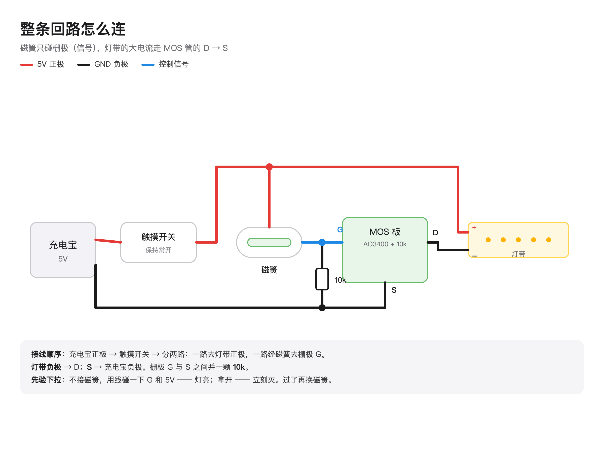
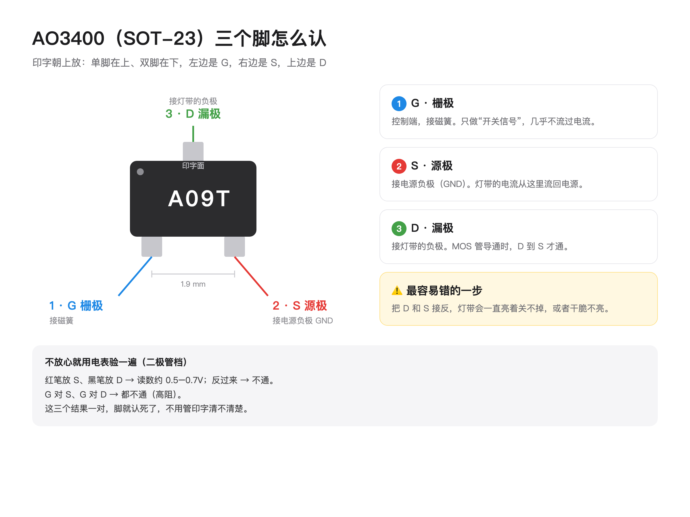
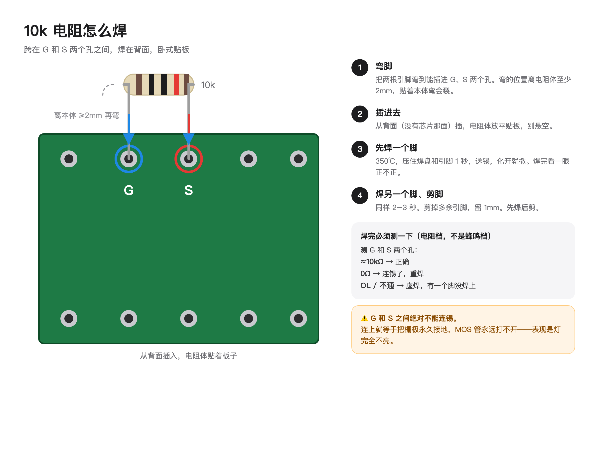

把一枚冰箱贴贴到盒面的感应区，盒内的灯带亮起；拿走磁铁，灯灭。不按键、不联网、不改原灯带。
只有一个动作，一个结果。
点一下按钮，模拟把冰箱贴放到盒面。灯亮起，拿走就熄灭。
不做开盖联动、不做延时熄灭、不做调光——逻辑越少，越不容易坏。
磁簧只负责把 5V 接到栅极，灯带电流走 MOSFET 的 D→S，不经过磁簧。

GPS-14A 常开塑封型。磁铁靠近时闭合，移开时断开。对磁场方向敏感，尽量垂直盒面安装。
焊在栅极和源极之间。没有它，磁簧断开后栅极悬空，MOSFET 会保持导通，灯关不掉。
SOT-23 逻辑电平 N 沟道 MOSFET。5V 栅压即可完全导通，带 2A 灯带余量充足。
三个最容易翻车的地方。


单件成本约 50–80 元，不含工具与电源。
| 元件 | 规格 | 数量 |
|---|---|---|
| 磁簧开关 | GPS-14A 常开塑封 2.7×14mm | 10（挑选） |
| 钕磁铁 | φ15×3 N35 | 2 |
| MOSFET | AO3400（SOT-23，A09T） | 1 |
| 下拉电阻 | 10kΩ 1/4W | 1 |
| 灯带 | 5V COB 2m 3000K CRI≥90 | 1 |
| 保险丝 | PPTC 1.1A / 2A / 3A | 各 1 |
| 电源 | 5V 充电宝 | 1 |
电路已跑通，剩真实材料适配与装配。
电路链路验证 — 磁铁靠近亮，拿走灭
隔布 + 3mm 亚克力触发 — 吸合距离约 2cm
10k 下拉与焊点验证 — 实测 10kΩ
现成冰箱贴 + 真实盒体测试 — 决定是否定制磁铁
量电流、装保险丝
确定磁簧安装位置与感应区标记
装配、走线、开合盖测试